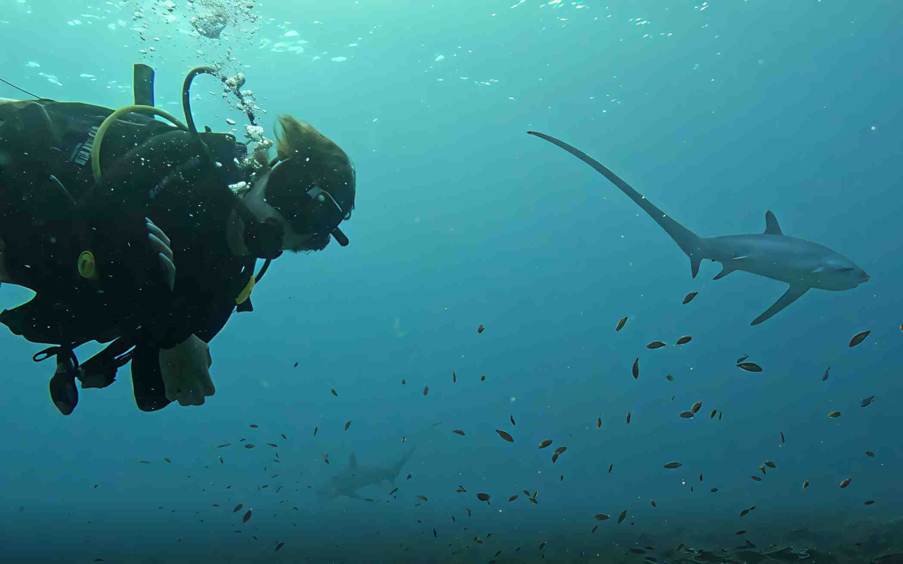
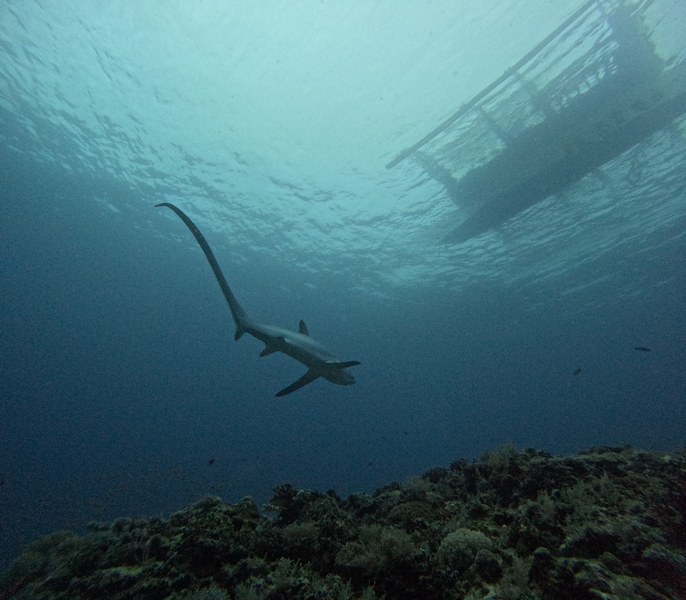

I've guided hundreds of divers to see thresher sharks at Kimud Shoal, and the reaction is always the same — absolute awe. There's nothing quite like watching a pelagic thresher shark glide past you in the early morning blue. It's graceful, silent, and unlike any diving experience you've had before. In this guide I'll tell you exactly what to expect so you can make the most of your dive.
Why Malapascua for Thresher Sharks?
Malapascua Island is one of the very few places in the world where you can reliably see pelagic thresher sharks (Alopias pelagicus) on a scheduled dive. Most shark species are unpredictable — you might see them, you might not. But Malapascua is different. The thresher sharks here visit a specific underwater "cleaning station" at Kimud Shoal almost every morning, where small cleaner fish remove parasites from their skin and gills. This predictable behaviour is what makes Malapascua so special.
The island has been famous for thresher shark diving since the 1990s and remains the most reliable place on earth to dive with these beautiful, elusive creatures. No other dive site in the world offers this level of access to pelagic threshers.

About Kimud Shoal
Kimud Shoal is a submerged seamount located about 45 minutes by boat north of Malapascua Island. The cleaning station sits at approximately 18–30 metres depth, on the lip of the shoal where the reef drops away into deep open water. The thresher sharks ascend from the deep ocean to be cleaned here, typically in the hour around sunrise.
The shoal itself is a beautiful dive site — well beyond just the sharks. You'll see soft corals, sea fans, schooling fish, and occasionally other pelagic species including manta rays, hammerheads, and whale sharks (especially at nearby Monad Shoal).
Dive Details at a Glance
- Dive site: Kimud Shoal, ~45 min north of Malapascua by boat
- Depth: 18–30 metres at the cleaning station
- Visibility: Typically 15–25m, up to 30m in peak season
- Water temperature: 26–29°C year-round
- Current: Mild to moderate — a slight current is normal
- Wetsuit recommendation: 3mm is sufficient; 5mm for sensitive divers
- Certification required: Advanced Open Water or equivalent
- What's included: BCD, regulator, wetsuit, tank, certified guide, boat, marine fees
Your Dive Day — Hour by Hour
Wake Up
Yes, it's early. Set two alarms. The sharks don't wait — and neither does the boat.
Arrive at the Dive Shop
Meet your guide, get briefed on the dive plan, collect your equipment, and do your gear check. Your guide will explain the site, the depth, and the rules for approaching the sharks.
Boat Departs
Enjoy the 45-minute boat ride to Kimud Shoal. The island is still dark, the stars are out, and the sea is calm. It's a magical time of day. Bring a light jacket — it can be cool on the boat.
Descent at First Light
You descend as the sun starts to rise. The light filtering through the water at this time is stunning. Settle at the cleaning station depth (18–25m) and wait quietly.
The Sharks Arrive
Pelagic thresher sharks typically appear within the first 15–30 minutes of the dive. You'll often see one or more circling the cleaning station — their enormously long tail fins are unmistakable. Stay still, stay low, and enjoy the encounter.
Safety Stop & Ascent
After 40–50 minutes at depth (depending on air consumption), you ascend with a 3-minute safety stop at 5m. Surface with huge smiles.
Back on Malapascua
Return to the island for breakfast — you've earned it. Most divers then do a second or third fun dive in the afternoon at other local sites.
Certification Requirements
Due to the depth of Kimud Shoal (18–30m), a minimum SSI or PADI Open Water Diver certification is required for the thresher shark dive. Since December 2025, Open Water divers must complete a mandatory buoyancy workshop before joining the dive — your guide will arrange this the day before.
Advanced Open Water certified divers can dive with a Divemaster and have the most flexibility at depth. If you only have Open Water certification, joining with an instructor is required in strong current conditions.
- Some dive operators allow Open Water certified divers with a private guide at shallower portions of the shoal — ask us when booking and we'll check what's possible.
- You can do a short Advanced Open Water course on Malapascua before your shark dive. The Deep Dive and Underwater Navigation adventures (required modules) can be done locally and take 2 days.
- Absolute beginners can start with a Discover Scuba Diving (DSD) program and enjoy other shallower dive sites around the island while working toward certification.
Diving beyond your certification depth is dangerous and puts you and your guide at risk. Always be honest about your experience level — we'll find the best dive for you regardless.
Best Time to See Thresher Sharks in Malapascua
Thresher sharks can be seen at Kimud Shoal year-round — this is one of the things that makes Malapascua so unique. However, conditions vary by season:
November to May — Peak Season ⭐
This is the best time to dive in Malapascua. Visibility is at its peak (20–30m), seas are calm, and thresher shark sightings are extremely frequent. December to February offers the most stable weather. This is also the busiest period — book accommodation and dives well in advance.
June to October — Shoulder Season
Seas can be rougher and visibility slightly reduced during the southwest monsoon season. Fewer tourists visit, which means more personal dive experiences. Thresher sharks are still regularly sighted, and conditions are often better than people expect. Some dive trips may be cancelled during strong weather periods.
What You'll See Underwater
The thresher sharks are of course the headline act, but Kimud Shoal offers much more:
- Pelagic thresher sharks — the main event. Usually 1–4 individuals per morning. Their distinctive scythe-like tail makes them instantly recognizable.
- Schooling fish — huge schools of anthias, fusiliers, and jacks are always present around the cleaning station.
- Reef fish — the shoal top is rich with triggerfish, wrasse, and parrotfish.
- Occasional bonus sightings — manta rays, hammerheads, eagle rays, and whale sharks have all been reported at and around Kimud Shoal, though less predictably.
- The light — diving at dawn at Kimud Shoal is visually stunning. The blue water, the rising sun filtering through, and the silhouette of a thresher shark against that backdrop is something you'll remember forever.

Insider Tips for Your Thresher Shark Dive
🤫 Stay Still and Stay Low
Thresher sharks are shy and can be easily startled. When you reach the cleaning station, kneel or hover low on the sandy bottom, minimize your movement, and avoid making sudden gestures. The calmer and quieter you are, the closer the sharks will come.
📷 Camera Settings for the Dark
It's dark at depth at 6 AM. If you're bringing an underwater camera, set a high ISO (800–1600), use a wide aperture, and bring a torch or video light if possible. Housed GoPros and smartphones in dive cases work well for video — the movement of the shark tells the story even if the image is slightly grainy.
🌡️ Control Your Breathing
Slow, controlled breathing conserves your air and keeps you neutral in the water. Divers who breathe slowly will spend more time at depth with the sharks. Practice before your trip if you can.
🍽️ Eat Something Before You Go
The boat ride can be bumpy and some divers experience seasickness. A light snack before departure helps — don't dive on a completely empty stomach, but also don't eat a heavy meal.
💧 Hydrate Well the Night Before
Dehydration increases the risk of decompression sickness. Drink plenty of water the evening before your dive and avoid alcohol the night before a deep dive.
Frequently Asked Questions
What certification do I need for the thresher shark dive?
An SSI or PADI Advanced Open Water certification is required due to the 18–30m depth at Kimud Shoal. Open Water certified divers may be accommodated at shallower sections with a private guide — contact us to discuss your specific situation.
Is it guaranteed I'll see a thresher shark?
Sightings at Kimud Shoal are extremely reliable but cannot be 100% guaranteed — these are wild animals. During peak season (November–May) the vast majority of dives result in shark sightings. Off-season sightings are still very frequent. If conditions are poor and the dive is cancelled, you won't be charged.
How many sharks will I see?
On a typical morning you can expect to see 1–4 individual thresher sharks at the cleaning station. Some mornings are better than others. On exceptional days, divers report seeing 6 or more sharks in a single dive.
Can I do more than one dive per day?
Absolutely. Most guests do the thresher shark dive in the early morning and then 1–2 fun dives at other sites in the afternoon. Popular afternoon sites include Gato Island, Lighthouse Reef (for mandarin fish), Chocolate Island, and the Doña Marilyn wreck.
Is the thresher shark dangerous?
Pelagic thresher sharks are not considered dangerous to humans. They are shy, non-aggressive fish that feed primarily on small schooling fish. There are no recorded attacks on divers at Kimud Shoal. The biggest risk they pose is accidentally hitting you with their long tail during a fast turn — which is why staying low and calm is important.
What is the price of the thresher shark dive?
Thresher shark dive packages start from ₱6,000 per diver, including all equipment (BCD, regulator, wetsuit, tank), a certified guide, boat, and marine fees. Contact us on WhatsApp for current pricing and multi-dive packages.